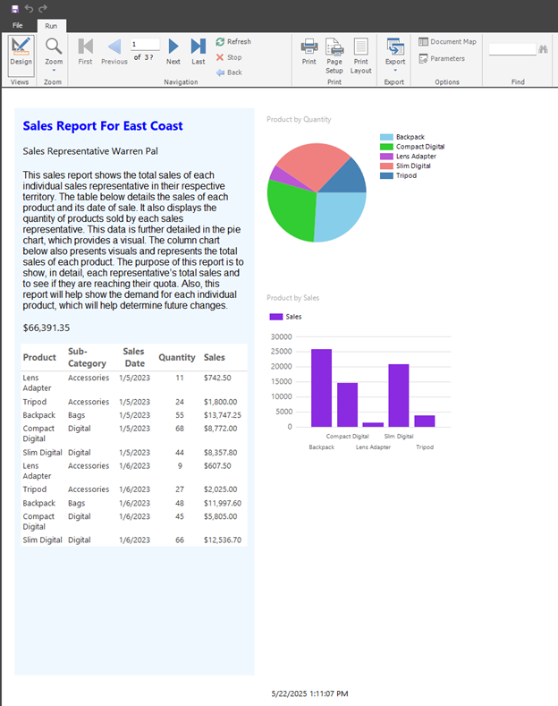
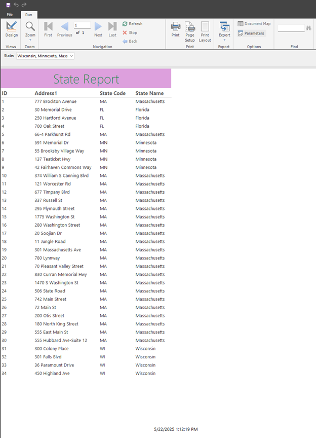
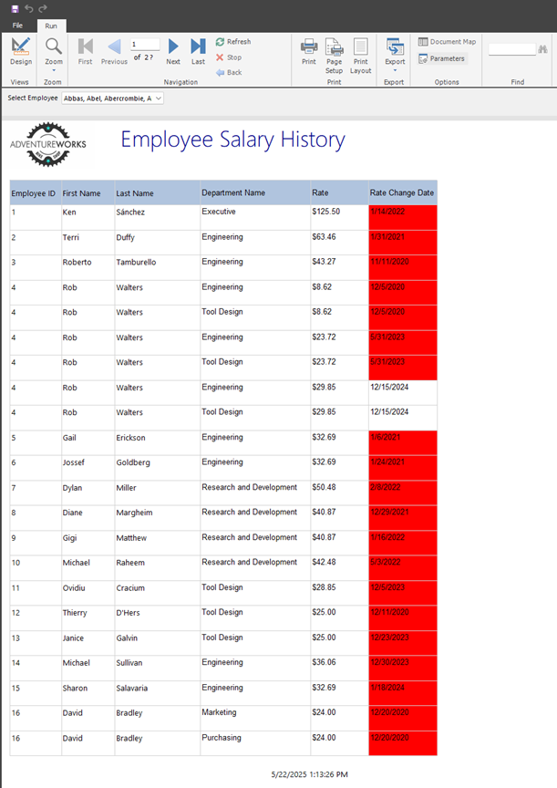

This course focuses on data visualization by extracting data from SQL, establishing connections through ODBC, and designing interactive reports. It focuses on designing/building reports using Power BI Report Builder and Microsoft Access.
Learning the history and future trends of presenting data to stakeholders.
Building reports using visuals such as pie graphs, bar graphs, gauges, data bars, sparklines, and map controls to highlight business requirements.
Creating conditional formatting and calculated fields by utilizing custom expressions.
Navigating report design and formatting within the Power BI Report Builder interface.
Creating a free-form sales report from scratch in Power BI Report Builder.

Created a sales report in Power BI Report Builder using parameters.

Building a report in Power BI Report Builder to help HR make informed decisions regarding employee compensation. Provided parameters and highlighted employees who have not been given a raise in the past 12 months.

← Return to Academics